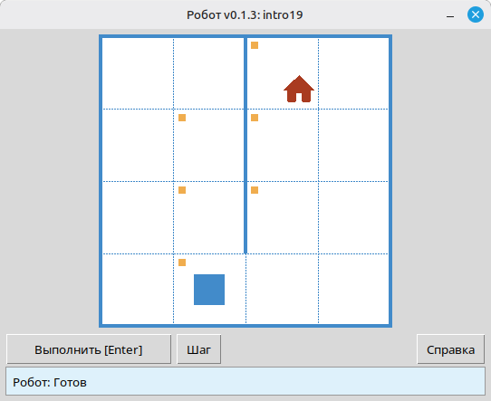
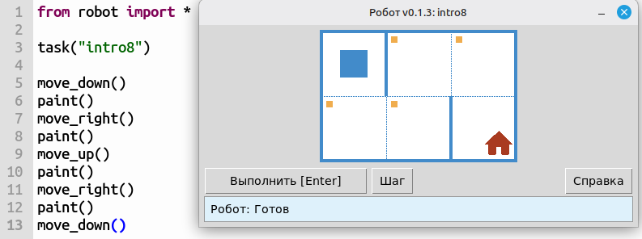
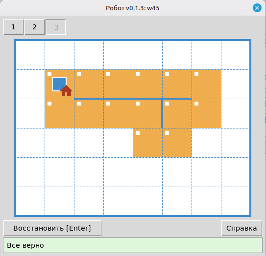
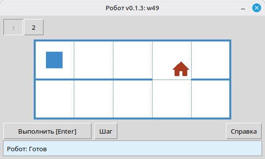
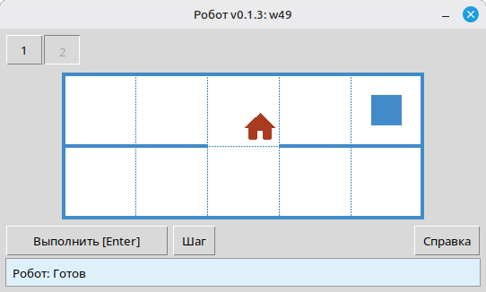
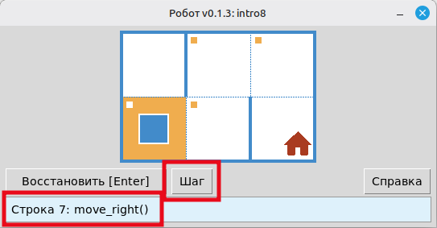
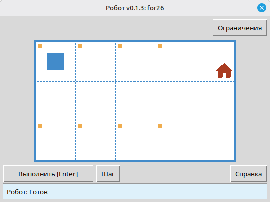
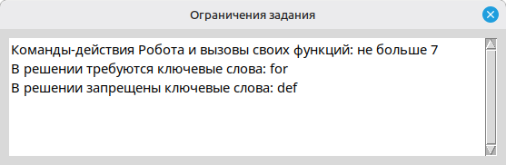
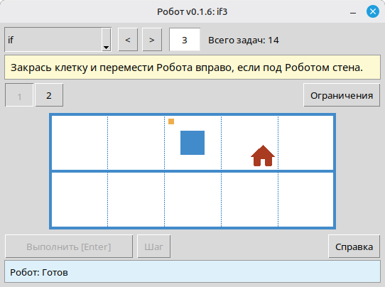

Задание или свободное поле
task("имя")- Открыть задание из набора.
field(width=8, height=6)- Открыть свободное поле без файла задания.
Для учителей информатики
Учащиеся пишут небольшие программы на Python: перемещают Робота по клетчатому полю, закрашивают клетки, проверяют наличие стен и уже закрашенных клеток. Всё это видно в окне исполнителя и работает локально.

Задания выглядят как небольшие задачи на клетчатом поле. Учащиеся тренируют последовательности команд, циклы, условия и функции, а результат сразу виден на экране.
Стены, отмеченные клетки и цель задания видны сразу, поэтому ученику проще понять, что должна сделать программа.
После запуска Робот проверяет результат. Учащийся сразу видит, прошло ли решение, и может сам исправить ошибку.
Во многих заданиях есть несколько обстановок. Одна программа должна пройти все варианты, поэтому приходится писать общий алгоритм, а не набор ходов для первой обстановки.
Перед написанием кода можно открыть каждую обстановку и понять, какие случаи должно покрывать решение.
Программу можно запускать по одной команде в окне Робота. Это помогает найти ошибку и удобно для разбора у доски или на проекторе.
В некоторых заданиях есть лимиты на команды или конструкции. Они помогают вывести учащегося к нужной идее: циклу, условию или функции.

intro8: дойти до домика и закрасить отмеченные клетки.Когда все обстановки пройдены, Робот показывает это в окне. Учащемуся не нужно ждать ручной проверки.

Через выбор обстановки можно посмотреть все варианты поля. Так проще заранее продумать решение, которое сработает везде.


В пошаговом режиме видно, что делает каждая команда. Это удобно для самопроверки и для общего разбора.

Если в задании есть ограничения, Робот показывает их рядом с условием. Учащийся понимает, какие средства нужно использовать в решении.


Отдельный режим просмотра открывает каталог задач без запуска ученического решения. Учитель может выбрать тему, перейти к нужному номеру, прочитать условие, посмотреть все обстановки и ограничения. Это удобно при подготовке урока и для показа условия на проекторе.

if3).После объяснения темы учащиеся решают задания в своём темпе. Автоматическая проверка снимает часть рутинной проверки: вы видите, кому нужна помощь, а кто уже может двигаться дальше.
for12 или w25.task("…") и дорабатывают программу, пока не пройдут все обстановки.Задания уже разложены по темам, поэтому их легко встроить в ход курса. Все задачи и справочник команд.
intro1 … intro24fun1 … fun20for – for1 … for28for и функции – forfun1 … forfun9while – w1 … w51while и функции – wfun1 … wfun12if – if1 … if14while с if – wif1 … wif13if и else – ifelse1 … ifelse12compound1 … compound11
Команд немного, и их легко показать на первых занятиях. Можно подключить всё сразу через from robot import * или импортировать только нужные имена.
from robot import *
task("intro8")
move_down()
paint()
move_right()
paint()
move_up()
paint()
move_right()
paint()
move_down()task("имя")field(width=8, height=6)move_right()move_left()move_up()move_down()paint()is_free_left() … is_free_down()is_wall_left() … is_wall_down()is_cell_painted()is_cell_not_painted()pol()printn(value)Условия задач, окно исполнителя «Робот» и текст справки доступны на перечисленных ниже языках. Язык выбирается автоматически на основе языка интерфейса операционной системы.
robot. Для старта можно взять sample_solution.py из архива.task(). Имена заданий перечислены в темах выше.viewer/viewer.py из архива с модулем.
Требования: Python 3.7+ и стандартная библиотека. Окно Робота использует tkinter; он входит в большинство настольных установок Python.